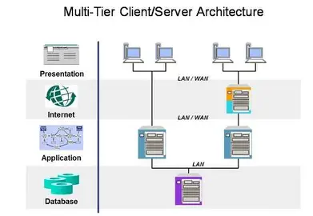

Multitier architecture, also known as n-tier architecture, is a system that is deployed across multiple different physical nodes or computers. An understanding of distributed computer systems and the concept of layers and tiers is important to understand how web applications are structured and how they work.

A layered architecture is one where different parts of a software system are regarded as having a separate role. This is a conceptual rather than a physical layering of system components. The three basic layers are:
The term tier is generally used to mean physically separated devices. A multitier system is therefore one that is deployed on multiple different nodes or computers. Using multiple tiers is necessary when we want to make our applications distributed and scalable so they can handle large numbers of users at the same time.
Consider a web-based banking system as an example of multitier architecture in practice:
Once we start using large numbers of computers running different parts of the system across multiple tiers, we have what is called an n-tier architecture. N-tier architectures are a fundamental part of web applications because the presentation layer, which runs in web browsers, is always widely distributed across many users' machines. The large number of users of some systems means that the business logic and data management layers may also have to be distributed across multiple machines to keep up with demand.